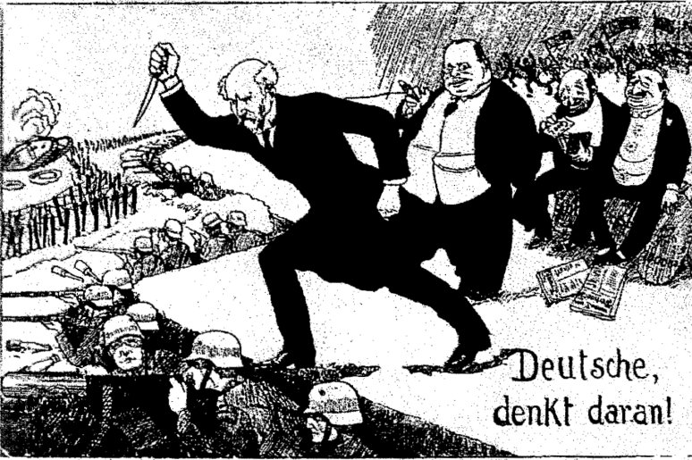

Gevolgen
Welke gevolgen had de Eerste Wereldoorlog?
In de tabel hieronder zie je het aantal doden en gewonden van de belangrijkste landen in de oorlog. De getallen kunnen afwijken. Elk land heeft dus grote verliezen geleden en de oorlog had een grote impact op iedereen.
| Land | Aantal gewonden | Aantal doden |
|---|---|---|
| Duitsland | 4.207.028 | 1.676.696 |
| Oostenrijk | 3.620.000 | 1.200.000 |
| Bulgarije | 152.390 | 87.500 |
| Servië | 133.148 | 45.000 |
| Rusland | 1.450.000 | 1.700.000 |
| Frankrijk | 4.266.000 | 1.345.300 |
| België | 44.686 | 13.716 |
| Groot-Brittanië | 1.662.625 | 702.410 |
| Italië | 947.000 | 460.000 |
| Verenigde Staten | 205.690 | 115.660 |

Hoe is de oorlog afgelopen?
In maart 1918 werd de vrede van Brest-Litovsk gesloten tussen Duitsland en Rusland. Dit zorgde ervoor dat de oorlog aan het Oostfront was gestopt. Alle Duitsen troepen gingen naar het Westfront. Door de hulp van de Verenigde Staten maakten de Franse en de Britten nog een kans. In Duitsland was er in november een opstand opgetreden waardoor Wilhelm II aftrad. Duitsland viel in de handen van een nieuwe regering. Deze regering ondertekenden de wapenstilstand en later ook het Vredesverdrag van Versailles.
De soldaten die nog aan het vechten waren aan het Westfront voelden zich door de nieuwe regering in hun rug gestoken. De Duitsers hadden misschien minder mensen, maar ze hadden wel de beste plekken om zich te verdedigen. De Duitsers hadden ook al best veel veldslagen gewonnen. Toen ze te horen kregen dat de regering de handoek in de ring gooiden waren veel soldaten boos, Hitler was ook een soldaat die aan het Westfront vocht, door deze gebeurtenis wilde hij zelf zijn politieke partij oprichten.